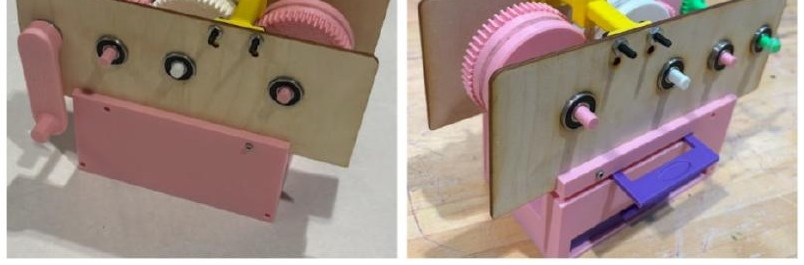
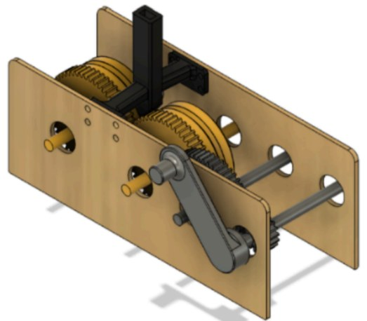
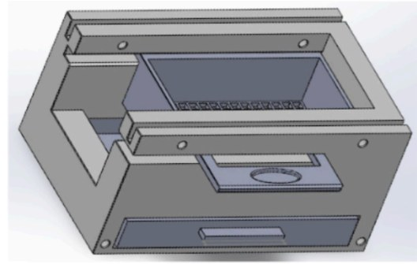

Sunflower Seed Shelling Machine
3D MODELS
I led the crushing mechanism for a hand-cranked machine that shells sunflower seeds: roller geometry, the inter-roller gap, the funnel, and the drive train. My best three-minute run produced 41 clean kernels from 68 seeds fed (27 lost to shell damage) at 13.7 kernels per minute, the fastest machine across all four course sections, after about six printed roller versions and four funnel geometries.
Motivation
An EGR 121 build challenge: separate edible kernels from shells by hand, with a mechanism that survives repeated cranking and does not crush the kernels it frees.
My role
I led the crushing mechanism and drive system end to end, from roller geometry through the gear train and the kernel/shell separation stage.
Technical approach
Roller and feed. Vertical seed orientation forces the shell to fracture along its natural seam before the kernel compresses. Early horizontal feeds crushed most of the kernels. Ridged roller slots at a 0.253″ gap concentrate stress on the brittle shell; smooth rollers damaged kernels and serrated rollers jammed.
Drive train. A 9:1 gear reduction runs from crank to rollers, after the earlier 1:1 design snapped the printed shaft. An X-shaped key plus CA adhesive ties the crank to the shaft.
Separation. A narrow straight funnel enforces vertical orientation on its own, replacing a hopper-and-stopper that kept jamming. A perforated hand-shaken sifter plate separates kernels from shells, after a powered-fan prototype failed even at full drill speed.
What I would do differently. I found the 0.253″ gap by printing six roller versions and feeding seeds through each, when a bench measurement of shell fracture force and kernel crush strength would have set the gap before the first print. The machine still wastes 27 of every 68 seeds, and I never instrumented the crushing zone, so I cannot attribute that loss to gap variation, feed angle, or seed size spread. My next build measures the force, grades the seeds by size, and sets the gap from data. I would also size the drive shaft from a torque calculation instead of learning the 1:1 limit when it snapped.


